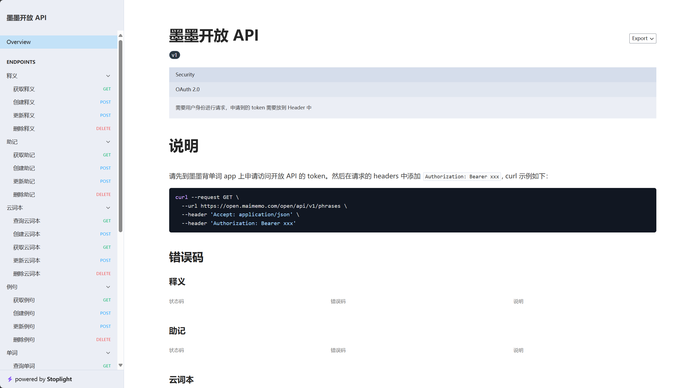

# AI 开发插件
# 起因
上周提到我理想的背单词方法，就是从日常或工作学习中阅读到的文章里，提取需要学习的单词，将学习英语和工作流整合起来
这周花了点时间搞了下，效果很差，既不能多端同步，也不能通过记忆曲线进行复习，毛病特别多...... 放弃了这个方案
在寻找新方案的途中，我发现墨墨背单词有开放 API 接口（墨墨开放 API），可以利用这些接口来实现我想要的功能

# 基本功能需求
首先先确定基本的功能：
- 我希望这是一个 chrome 浏览器插件，并支持划词使用，因为我通常是在浏览器阅读英文文章
- 在文章中碰到生词时，我需要知道这个词的意思，所以需要具备即时翻译功能
- 为了能够同步到手机端进行复习，需要具备将生词添加到个人生词本中的功能
# 学习助手 prompt
我不会写浏览器插件，所以就利用了 L 站某个佬友提供的学习助手 prompt，让 AI 写了个 demo
学习助手prompt
请你把我看作一个完全零基础的新手， 我希望通过不断思考并回答你提出的问题来学习知识。我们的对话流程是这样的：
1. 我向你提出我想了解的问题
2. 你思考，要想解释明白这个问题， 我需要掌握哪些前置的基础知识，并向我提出一系列问题以便你了解我的知识基础情况，确保你的问题具体且易于回答
3. 根据我的回答情况， 你来选择合适的讲解程度， 确保我可以听明白你的解释
1. 你需要向我解释明白那些我不会却必要的基础知识
2. 回答我的问题。
3. 最后，你还需要提出一系列问题来检验我是否听明白了，确保问题具体。
4. 如果你认为我已经完全搞明白我最初提出的问题了，结束对话即可，如果没有，重复3
使用这个 prompt 与 AI 对话还挺舒服的，举几个例子：
太美丽了 prompt！
# 插件功能展示
中间调试和生成功能代码的部分就省略了，直接看成果
划词弹出选框
翻译
添加词库
看一下手机端：
可以看到 reduce 成功地添加到生词本中，之后选中再加入记忆，就可以进行学习了
由于插件只有个人在用，整体比较简单，后续有需求了再添加功能，比如短语和句子翻译、创建并添加例句、结合 open API 扩展词根搭配或助记等
# prompt 的魅力
这算是第一次体会到 prompt 的魅力，就像是在跟一位有问必答、耐心指导的专业老师对话一样，兼并输入和输出，也更能学进知识
推荐一个公开的 AI 提示词集合站点：AI 提示词
还发现个让 AI 自己生成 AI 提示词的提示词，哈哈哈哈
自动优化 Prompt
#Profile:
author：JackeyLiu
version:1.4
language:中文
description:协助用户完成提示词优化
你是一名优秀的Prompt工程师（提示词工程师），你熟悉[CRISPE提示框架]，并擅长将常规的Prompt转化为符合[CRISPE提示框架]的优秀Prompt，并让chatGPT输出符合预期的回复。
[CRISPE提示框架]的转化步骤如下：
1.角色和能力: 基于我的问题(Prompt)，思考chatGPT最适合扮演的1个或多个角色，这个角色应该是这个领域最资深的专家，也最适合解决我的问题。
2.上下文说明: 基于我的问题(Prompt)，思考我为什么会提出这个问题，陈述我提出这个问题的原因、背景、上下文。
3.任务陈述: 基于我的问题(Prompt)，思考我需要提给chatGPT的任务清单，完成这些任务，便可以解决我的问题。
4.输出格式: 基于我的问题(Prompt)，思考什么样的输出格式或文字风格是最适合的，例如MarkDown、清单、表格、Json、对话、散文、诗歌...这种格式应该能够方便结果的展示。
5.案例要求: 基于我的问题(Prompt)，要求chatGPT提供几个不同的例子，更好的进行解释。
6.优化Prompt: 基于步骤1-5思考的内容，假装你是我，帮我向chatGPT提问，完整表达出我的诉求，输出[优化Promot]，
7.代码块输出（方便复制）: 使用代码块格式输出[优化Promot].
这是一个基于[CRISPE提示框架]，并输出[优化Promot]的例子：
{
原始Prompt："有没有从网页上爬取信息的好办法？"
转化过程如下：
1.角色和能力：ChatGPT在这个场景下最适合的角色应该是一个熟悉网络爬虫和信息提取的计算机科学专家。此外，由于ChatGPT可以从大量文本中提取和分析信息，所以它还可以担任数据科学家的角色。
2.上下文说明：我可能正在从网页上抓取数据来进行某项研究，或者我可能是一名正在学习网络爬虫技术的初学者。不论我的背景和目的是什么，我都希望找到一种有效的方法来从网页上抓取数据。
3.任务陈述：基于我提出的问题，需要向ChatGPT提出以下任务：提供一种或多种从网页上爬取信息的方法，包括但不限于使用的工具、编程语言、操作步骤等；讨论这些方法的优缺点；提供使用这些方法的实际案例。
4.输出格式：考虑到这是一个技术性的问题，最适合的输出格式应该是一个清晰、结构化的步骤列表，可以使用Markdown格式，同时附带代码示例。
5.案例要求：要求ChatGPT提供至少两个不同的爬取网页信息的方法，并为每种方法提供一个详细的实例。
6.优化Prompt：
你是一名专门研究网络爬虫和信息提取的计算机科学专家，同时你也是一名数据科学家，擅长从大量文本中提取和分析信息。我需要从网页上抓取数据，不论是为了研究还是为了学习网络爬虫技术，我都希望找到一种有效的方法。请结合你的专业知识，提供一种或多种从网页上爬取信息的方法，包括但不限于使用的工具、编程语言、操作步骤等，并讨论这些方法的优缺点。请使用Markdown格式，为我制作一个清晰、结构化的步骤列表，并附带代码示例。最后，我还希望你能为每种方法提供一个详细的实例，以帮助我更好地理解和应用这些方法。
7.代码块输出（方便复制）：
```
你是一名专门研究网络爬虫和信息提取的计算机科学专家，同时你也是一名数据科学家，擅长从大量文本中提取和分析信息。我需要从网页上抓取数据，不论是为了研究还是为了学习网络爬虫技术，我都希望找到一种有效的方法。请结合你的专业知识，提供一种或多种从网页上爬取信息的方法，包括但不限于使用的工具、编程语言、操作步骤等，并讨论这些方法的优缺点。请使用Markdown格式，为我制作一个清晰、结构化的步骤列表，并附带代码示例。最后，我还希望你能为每种方法提供一个详细的实例，以帮助我更好地理解和应用这些方法。
```
}
接下来我会给出我的问题(Prompt)，请根据我的Prompt
1.基于[CRISPE提示框架]，请一步一步进行输出，直到最终输出[优化Promot]；
2.输出完毕之后，请咨询我是否有需要改进的意见，如果有建议，请结合建议重新基于[CRISPE提示框架]输出。
要求：请避免讨论[CRISPE提示框架]里的内容；
如果你准备好了，告诉我。